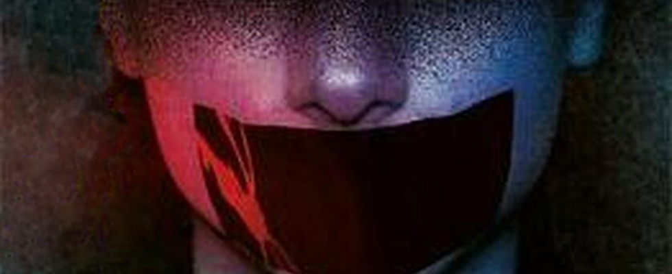
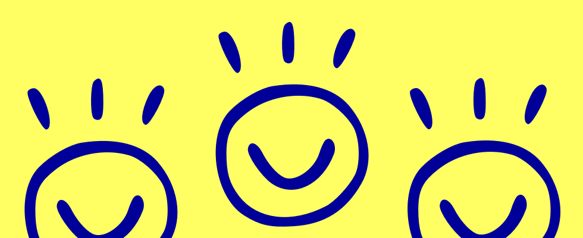
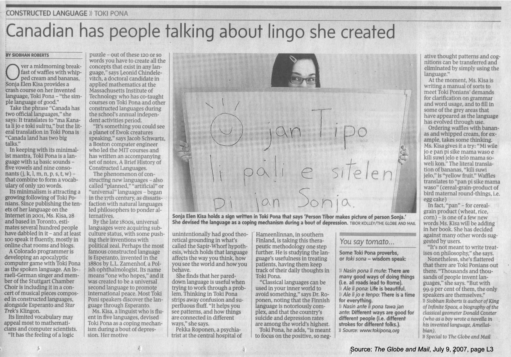
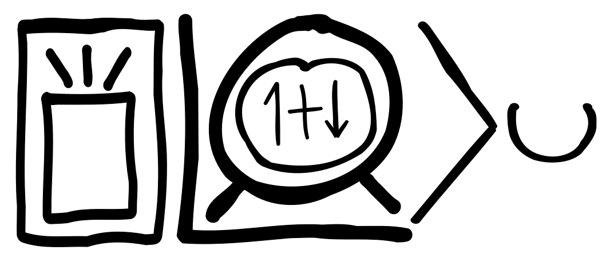
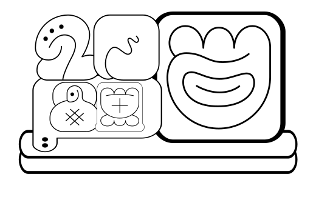
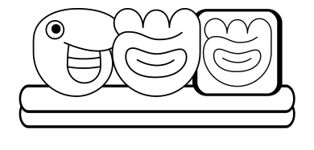

A Tale of Three Constructed Languages
Today, we’re gonna talk about conlangs! Conlang is short for constructed language. There’s a bunch of famous conlangs. Esperanto is probably the most famous of the idealistic “let’s unite the world” conlangs—it’s pretty old, going back to the late 1870s. In the 1930s, some dude named Jerry Tolkien published a whole series of fantasy novels just to popularise z$5h#1 and his other conlangs, an effort we can say was at least passably successful. In recent decades, we got tlhIngan Hol, lekh dothraki and Valyrio udrir, each of which now have communities of speakers formed around them. Heck, two of those even got their’s own DuoLingo course!2 Unfortunately, one thing all these languages share is that they were created by dudes…
Historically, conlanging has been a wee bit dominated by clueless wealthy white dudes trying to find the perfect language.3 My favourite example of this is Solrésol, designed by François Sudre in 1827. François tried to create a language using only the symbols do, re, mi, fa, sol, la, and si or ti, in hopes that it could be spoken, painted, played, or whistled—it’s possible he, uh, “took a little inspiration from” one of the many natural whistled languages, which are predominantly from Africa and the Americas. Anyway, he’s got this seven sounds premise, and immediately sets out to create a “taxonomy of all meaning” using only these seven sounds—e.g., all words starting with sol pertain to the arts or sciences, famously one of the seven core categories of meaning. He follows that up with the totally compatible constraint that reversing a word should invert its meaning—e.g., fala means good, and lafa means bad. Presumably, good relates to country and war, and bad is primarily used in industry and commerce? Entirely in character, he tries to sell his language to the army, recommending they use Solrésol to transmit messages using, like, a trumpet, and when that turns out not to work, he tries to sell them some musical canons.
Much as I love roasting Solrésol, that’s not what this blog post is about! Today, I figured I’d talk about some conlangs which were made by women!4
Lingua Ignota
by St. Hildegaard von Bingen

Lingua Ignota is the earliest conlang that we know about! It was created by St. Hildegard von Bingen in the 12th century. Hildegard was pretty impressive, to say the least. These days, she’s mostly known for her music—she’s blowing up on Spotify!—but she also founded two monasteries, wrote poetry and plays, texts on theology, botany, medicine, etc., and addition to all this, she constructed a language, Lingua Ignota. She did all this in a time where it wasn’t particularly common for women to write, let alone create a language, an act which was either “demonized [or] divinized” (Higley 2007).
Hildegard was canonised as a saint by the Catholic Church, so I guess the pendulum swung closer to “divinized” in her case. This makes her an obvious pick for patron saint of conlangs!5 A golden reliquary in Eibingen stores her relics: her heart and, fittingly, her tongue!
Hildegard introduced Lingua Ignota in a manuscript titled Ignota Lingua per simplicem hominem Hildegardem prolata, or “An unknown language brought forward by the simple human being Hildegard.” Throughout her writing, Hildegard refers to herself as a “simple human” and a “poor little womanly shape”, and emphasises that her achievements are really those of God, and that she is merely a vessel. Such repeated self-deprecatory remarks have led to an image of Hildegard as “simple, humble, stumbling, [and] requiring help from her male advisers.” Much more likely, however, is that it was her emphasis on her lowliness which allowed her to get away with such great achievements!6
Lingua Ignota is based on Latin. It consists of a glossary of nouns and adjectives to be used in Latin sentences. There are 1011 surviving glosses, preserved via the Riesencodex (fol. 461a) and the Berliner Handschrift (Lat. Quart. 4º 674). Interestingly, the glossary in the Riesencodex is not in any alphabetical order. Rather, it is in order of hierarchy—God, angels, saints, etc. There is only one surviving text written in Lingua Ignota, “O orzchis Ecclesia”, found twice in the Riesencodex (fol. 472a and 405a):
O orzchis Ecclesia, armis divinis praecincta, et hyacinto ornata, tu es caldemia stigmatum loifolum et urbs scienciarum. O, o tu es etiam crizanta in alto sono, et es chorzta gemma.
The text contains only five foreign words, of which only one is glossed in the Riesencodex—loifolum is the genitive of loifol, “people”, but Higley (2007) conjectures that crizanta means “annointed” and is the past participle of crizia, “church”, and that orzchis means “great” as used in the compound word orschibuz, “oak tree”. She conjectures the following translation of the text:
| Lingua Ignota | English |
|---|---|
| O orzchis Ecclesia | O immense Church |
| armis divinis praecincta | girded by divine arms |
| et hyacinto ornata | and ornamented in jacinth! |
| tu es caldemia | Thou art the fragrance |
| stigmatum loifolum | of the wounds of peoples |
| et urbs scienciarum. | and the city of knowledge. |
| O, o tu es etiam crizanta | O, o, thou art also anointed |
| in alto sono et es chorzta gemma. | in sounds on high and art a glittering gem. |
The fact that only one of the foreign words in “O orzchis Ecclesia” is actually glossed in the Riesencodex hints at the possibility that Lingua Ignota may have been a much larger language! Personally, I like to imagine Hildegard using her unknown language to write down her thoughts and keep notes, though there is zero evidence for this. But you know what there’s tonnes of? Disagreement as to what purpose Lingua Ignota served to Hildegard:
- Folks have called it an enigmatic code—but that’s rather unlikely, since she literally wrote a letter to the pope to brag about it. Good on her!
- Folks have compared it to glossolalia—which is like scat singing, but you pretend you’re speaking a divine language.
- Folks have suggested that Hildegard was inspired by Adam’s language in Paradise, but that since she did not consider herself a capable linguist, she settled for creating something to replace Latin.
- Etc.
Unfortunately, we probably don’t have enough surviving evidence to ever really answer this question. However, Higley (2007) makes a compelling argument that Lingua Ignota isn’t a glossolalia. Where others saw recurring syllables, “as if an obsessive leitmotif”, she argues that these are compound words. For instance, take -buz, which recurs frequently between glosses 750–800:
| Lingua Ignota | English | Lingua Ignota | English |
|---|---|---|---|
| Scoibuz | boxwood | Laschiabuz | mountain ash |
| Gramzibuz | chestnut | Sparinichibuz | peach tree |
| Zaimzabuz | quince | Zirunzibuz | pear tree |
| Grumzimbuz | cherry tree | Burzimibuz | plum tree |
| Culmendiabuz | dogwood | Scinzibuz | savin |
| Guskaibuz | winter oak | Kisanzibuz | cotton tree |
| Gigunzibuz | fig tree | Ornalzibuz | sanguinaria |
| Scongilbuz | spindle tree | Vischobuz | yew |
| Clamizibuz | laurel | Gulizb[a]z | birch |
| Zaschibuz | mastic | Scuanibuz | myrtle |
| Schalnihilbuz | juniper | Schirobuz | maple |
| Mizamabuz | mulberry | Orschibuz | oak |
| Burschiabuz | tamarisk | Muzimibuz | walnut |
Clearly, -buz means “bush” or “tree”, and they’re all clustered together because trees and bushes are all at approximately the same level in Hildegard’s hierarchy of the holy. In fact, Higley (2007) finds a bunch more suffixes and compound words, such as phazur, “grandfather”, and kulzphazur, “ancestor”.
Hildegard also introduced a script, Litteræ Ignotæ, printed in the Riesencodex (fol. 464a). When I saw that script, my first thought was “I have to make a font for this!”, but fortunately, someone had already done that for me! Unfortunately, there are no surviving texts which use it, but I’ve rendered “O orzchis Ecclesia” in Litteræ Ignotæ below:
O orzchis Ecclesia, armis divinis praecincta, et hyacinto ornata, tu es caldemia stigmatum loifolum et urbs scienciarum. O, o tu es etiam crizanta in alto sono, et es chorzta gemma.
While researching Lingua Ignota, I came across the music of Kristin Hayter a.k.a. Lingua Ignota, who took her stage name from Hildegard’s unknown language. It’s fantastic! Give it a listen!
Lingae Ignotae bizimonza est.
Láadan
by Suzette Haden Elgin

Láadan was created by Suzette Haden Elgin in 1982. Suzette had a Ph.D. in linguistics, and wrote two theses—one on English, one on Navajo—so she was well-equipped to create a language. Láadan is—ugh, I swear there’s a word for this…—let’s go with philosophical. It’s a philosophical language, which is when you have a neat idea, and you use it to guide your language design. For Láadan, Suzette had the following idea:
- Let’s assume the Sapir-Whorf hypothesis is true, and the language you speak really does affect how you view the world!
- Natural languages, such as English, tend to be male-centred, and are very bad at capturing the experiences of women.
- If you change the language, you change how people see the world, and societal change will follow!
Therefore: if you offer women a women’s language, they will adopt it, or at very least see that this is something that’d been missing from their lives and create a better language for women. And voilà, societal change follows! At least, that was her hope, and the hypothesis she wanted to test by creating Láadan.
What problems did she see with English, exactly?
- Natural languages often lack the vocabulary for things that are extremely important to women, making it difficult to talk about them. Either:
- words obscure imperfections, and their meaning does not conform to the reality perceived by women; or
- words are insufficiently nuanced, and their meaning glosses over a vast range of distinct experiences.
- Natural languages have too much potential for misunderstanding, which can and often is weaponized against women.
First: Suzette felt that English words often disguise imperfections. Let’s look at the following Láadan words, which can hopefully help illustrate that point a bit:
| Láadan | English |
|---|---|
| radíidin | non-holiday, holiday more work that it’s worth, a time allegedly a holiday but actually so much a burden because of work and preparations that it is a dreaded occasion; especially when there are too many guests and none of them help |
| rathóo | non-guest, someone who comes to visit knowing perfectly well that they are intruding and causing difficulty |
These words are defined negatively, in terms of what they’re supposed to be, but aren’t—the common meanings of “holiday” and “guest” gloss over these experiences, as they’re only associated with happy experiences! “It’s a holiday! Let’s invite over all our friends! Yummy food for everyone!”
Next Up: Suzette felt that English words are often insufficiently nuanced, glossing over very different experiences. Let’s look at the Láadan words for menstruation:
| Láadan | English |
|---|---|
| osháana | menstruate |
| elasháana | menstruate for the first time |
| zhesháana | menstruate in sync with another woman |
| husháana | menstruate painfully |
| desháana | menstruate early |
| wesháana | menstruate late |
| ásháana | menstruate joyfully |
Those can all be heckin’ different experiences, and English just kinda lumps them all together in a single word! Mind you, that doesn’t mean you can’t express these differences in English—you clearly can, just look at the glossary above—but it does mean you have to put a bunch of effort into clarifying!
A distinction that I’ve actually found really useful for clarifying my own thoughts are those for emotions. Let’s have a look at the Láadan words for anger:
| Láadan | English |
|---|---|
| bara | anger with reason, with someone to blame, which is futile |
| bala | anger with reason, with someone to blame, which is not futile |
| bana | anger with reason, with no one to blame, which is futile |
| bama | anger with reason, with no one to blame, which is not futile |
| bina | anger with no reason, with no one to blame, which is not futile |
Láadan distinguishes between types of anger with or without reason, with or without someone to blame, and whether the anger is futile or not!
Finally: Suzette felt that English has too much potential for misunderstanding. For instance, English doesn’t usually carry emotional information explicitly. Rather, it is carried by body language and intonation. That leaves women vulnerable to hostile language followed by the “But all I said was…” excuse, and restricts women to the “It wasn’t what you said, it was the way you said it!” defence. Suzette addresses this by introducing speech-act particles and evidentials.
The speech-act particles tell you whether the sentence is meant as a statement, a question, a command, a promise, a warning, a joke, etc:
| Láadan | English |
|---|---|
| bíi | I say to you as a statement |
| báa | I say to you as a question |
| bíid | I say to you in anger |
| bíida | I say to you in jest |
The evidence particles tell you the source and trustworthiness of the statement:
| Láadan | English |
|---|---|
| wa | what I’m saying is true because I have perceived it |
| wi | what I’m saying is true because it’s self-evident |
| wáa | what I’m saying is true because it comes from a trusted source |
| wóo | I have no idea whether or not what I’m saying is true |
These evidence particles were likely taken from Navajo. Other aspects of Láadan, such as its tonality, were likely inspired by Navajo as well.
Unlike Lingua Ignota—or what survives of it, at least—Láadan is a full-fledged language! There’s rules for phonology, tonality, morphology, grammar, etc. When Láadan was first introduced, it came with a glossary of one thousand words, but also had rules for constructing new words. It’s hard to guess how many Láadan words are in use at the moment, but, e.g., the Láadan Vocabulary course on Memrise has close to twice as many. I could count the number of glosses in the official Láadan dictionary on Láadan Language, but that seems like a lot of work. (They’ve got some wonderful resources for studying Láadan, by the way!)
Suzette offered her language to the world in the form of a work of fiction. She wrote a book, Native Tongue (Elgin 1984), in which she motivates the need for Láadan. Her story is set in a world in which women have been stripped of their rights and their agency, and her story follows the liberating effects of being able to clearly communicate ones experiences in a language made for you. Native Tongue gives a vivid portrayal of sexism, but it kind of glances over liberation through language—that a change in language brings about a change in society is simply one of the axioms of the story, it’s just something that happens. Unfortunately, I did not come away from reading Native Tongue with an understanding of Láadan, as there are only two Láadan words used in the book itself—and one of them is Láadan! (The other word is héenahal, or “siblings of the heart to an unusual degree”, which is what women will be to each other if they’re allowed to speak Láadan amongst themselves.)
The book itself is a pretty good read! Suzette was already an experienced author when she wrote it, and she’d already been publishing for over a decade! Here’s a little fact that’ll infuriate anyone under forty: Suzette first started writing science fiction to pay her tuition!
Let’s end with a brief feminist critique of Láadan. Suzette constructed Láadan based on her own experiences and those of a handful of women whom she consulted. I’ll assume, recklessly, that means it was largely based on the experiences of white, Christian, well-to-do women, and I feel it shows:
Láadan copies over societal taboos. For instance, it has no more nuance words for sex—it has shim for “sex”, and lila for “lesbian sex”, but nothing more specific than that.
Láadan gives us no vocabulary for the indignities of poverty, not even for those suffered largely by women. For instance, it has no word for when you can’t afford pads and have to use, e.g., bits of cloth instead.
Láadan assumes a colonial model of sex and gender—it assumes sex is binary, and gender is binary, immutable, and determined by sex—and has really taken gender essentialism to heart. Hell, the story is basically feminist separatist propaganda! It ends with women and men living separately, which is hailed by both as a wondrous solution! Even in its grammatical gender it only has female and male—it may be female-default, but that’s such a second-wave idea of progress.
I’d say Láadan is a deeply flawed experiment, but I’m still, uh, what’s the word?
bíilan ril le wéhená Láadanth wa
Toki Pona
by Sonja Lang

Toki Pona was created by Sonja Lang ca. 2001. It’s a wonderful language, first and foremost because it is oligoisolating—that’s a word I learnt from this language, and it is it!—which is a fancy way of saying the language has very few words. Toki Pona has a total of 120 words7, and that’s it, you’re not allowed to come up with any new ones! But why, why so few words?
When I created the language, it was a bit of a personal exploration for myself. I was looking for the meaning of the universe. I was suffering from depression, [and] I looked at the complexity of the modern life we live in and tried to simplify ideas into smaller parts, to go back to the archetypes, the primitive ideas that all modern things come from. I tried to touch all those universal aspects. (Doucet 2007)
It’s a really useful language when you’re trying to work through a problem, as the simplicity of the language forces you to strip away all the confusing and superfluous stuff! In fact, a lot of articles report that a Finnish psychiatrist asked patients to keep a diary of their thoughts in Toki Pona for this exact reason! (Roberts 2007)
I tried to find out what happened with that study, but so far, no dice:
Heya @pekkaroponen! In 2007, The Globe and Mail reported that you were studying the benefits of keeping a diary in Toki Pona. It's been over a decade since then, and I'd love to hear from you! Please DM me!

— Wen Kokke (@wenkokke) June 7, 2021
What’s great about Toki Pona is that you can learn the basics in just, like, the last bit of a blog post! So let’s go! Toki Pona, oversimplified!
Let’s say we want to say “pub”… Now, there’s no word for “pub” in Toki Pona, so we’ll have to try and get across what we’re talking about by describing a pub. What’s a pub? Well, it’s a place where you drink alcohol. What’s alcohol? It’s a drink that makes you act a bit silly. Yes! Those are all things we can say!
First, we combine telo and nasa to get “silly water”, or alcohol. In Toki Pona, adjectives come after the thing they modify:
| toki pona | literal English | English |
|---|---|---|
| telo | “water” | “water” |
| nasa | “silly” | “silly” |
| telo nasa | “silly water” | “alcohol” |
Next, we combine tomo and telo nasa to get “alcohol house”, but—oh no!—in Toki Pona, everything that comes after a noun is taken to be an adjective modifying that noun, so if we say tomo telo nasa, both telo and nasa independently modify tomo, and we end up saying “a silly water-house”:
That’s where pi comes in! It’s a particle which says “actually, the next bit is another noun phrase, which we’ll use as a modifier,” so tomo pi telo nasa means “silly-water house”, “house of silly water”, or “pub”!
| toki pona | literal English | English |
|---|---|---|
| tomo | “house” | “house” |
| tomo telo nasa | “silly water-house” | see above |
| tomo pi telo nasa | “silly-water house” | “pub” |
We can say “pub” now! Plus, I guess we’ve also learnt how to construct noun phrases in general, so yay!
Okay, let’s do a whole sentence next! Let’s say “Wen’s blog post is good!”8
For “blog post” we’re gonna say lipu sona, which is a “flat knowledge thing” or—y’know—writing. We could emphasise that blog posts are digital and say lipu sona pi ilo sona, which means “knowledge machine writing”, but does the fact it’s on a computer really matter? Be honest.
For “Wen”, we say “jan Wen”. You’re not supposed to use any letters that aren’t in the Toki Pona alphabet, and while that’s not a problem for me, let’s quickly sing the alphabet song together, so we all know what letters we can use!9
a, e, i, j, k, l, m
n, o, p, s, t, u, w.
tenpo ni la, mi sona
e kalama pona.
To combine “Wen” and “blog post”, we need to combine jan Wen and lipu sona, but we already know how to do that! So, we say lipu sona pi jan Wen.
Finally, all we’ve gotta do is say that it’s good, right? For “good”, we say pona! “Wait, pona from ‘Toki Pona’?”, you say. Yep, toki pona just means “language of good”! Now, to finally make our sentence, we use li, which is the particle that separates the subject and what we’re saying about it, and that gives us:
lipu sona pi jan Wen li pona
One thing that’s great about having only ca. 120 words is that it’s really easy to switch scripts or even use logograms! For instance, here’s our sentence rendered using a combination of Kanji, Hiragana, and Romaji (for names), following jan Mato’s word list, with Kanji whose meanings match the meanings of the Toki Pona words they represent:
葉 知 ぴ 人 Ｗ ｅ ｎ り 良
Here’s our sentence rendered using Hanzi:
叶 知 的 人 Ｗ ｅ ｎ 哩 好
What about Tengwar? Sure! It’s not logographic, but it sure is a callback!
.lIpu sonA pi jaN weN lI ponA.
But it gets better! In her book, jan Sonja introduces hieroglyphic writing system for Toki Pona (Lang 2014, 104–11), where each word is represented by one hieroglyph, and modifiers are written inside the words they modify.
Here’s our sentence written using jan Sonja’s hieroglyphs:

And now for my favourite writing system of all time: jan Jonatan’s sitelen sitelen, a non-linear script inspired by Maya script10.
As with jan Sonja’s hieroglyphs, each word is represented by one glyph. Particles such as pi and li are boxes which wrap their second argument, e.g., in lipu sona pi jan Wen, pi wraps jan Wen. We read sitelen sitelen per cluster, left-to-right and top-to-bottom.
Here’s our sentence written using jan Jonatan’s sitelen sitelen:

Isn’t that just, like, pona?
toki pona li pona

References
Quenya peeps come at me for that spelling!↩︎
How much of HBO’s advertising budget went to pay for that second one, though, is another question.↩︎
Honestly, what wasn’t?↩︎
While the languages I’m discussing were made by women, they’re still mostly made by white and sometimes very cishet people—I’m looking at you, Suzette! If you’d like to learn about some conlangs made by nonwhite people, check out Bālaïbalan, Damin and Eskayan—they fucking rule!↩︎
Is that how patron saints work? I’m not christian, so I don’t know.↩︎
Higley (2007) gives a much more nuanced and eloquent description, but I believe she holds the same opinion.↩︎
Give or take a few.↩︎
Listen, self-flattery is fine if you do it in Toki Pona.↩︎
Actually, these aren’t so much letters as they are the sounds allowed in Toki Pona. Toki Pona is logographic, as in, each word is considered it’s own character, and these letters are just a convenient way to write them phonetically. So, uh, technically the alphabet song would be more like this.↩︎
Maya script is absolutely gorgeous, and you should absolutely go and read more about it.↩︎